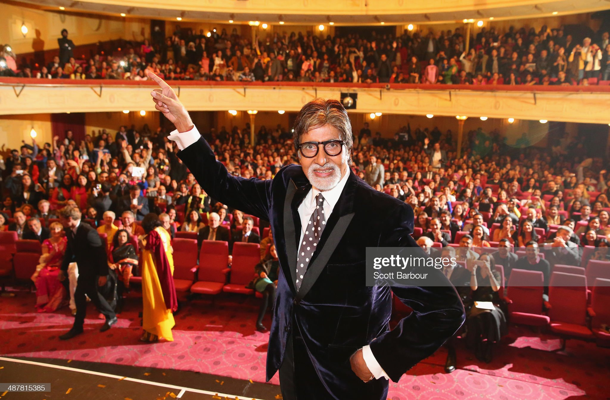

Amitabh Bachchan

Introduction
Amitabh Bachchan (pronounced [əmɪˈt̪ɑːbʱ ˈbətːʃən]; born Amitabh Srivastava; 11 October 1942[4]) is an Indian actor, film producer, television host, occasional playback singer and former politician known for his work in Hindi cinema. He is regarded as one of the most influential actors in the history of Indian cinema. During the 1970s–1980s, he was the most dominant actor in the Indian movie scene; the French director François Truffaut called him a "one-man industry".
Bachchan was born in 1942 in Allahabad to the Hindi poet Harivansh Rai Bachchan and his wife, the social activist Teji Bachchan. He was educated at Sherwood College, Nainital, and Kirori Mal College, University of Delhi. His film career started in 1969 as a voice narrator in Mrinal Sen's film Bhuvan Shome. He first gained popularity in the early 1970s for films such as Zanjeer, Deewaar and Sholay, and was dubbed India's "angry young man" for his on-screen roles in Hindi films. Referred to as the Shahenshah of Bollywood (in reference to his 1988 film Shahenshah), Sadi ka Mahanayak (Hindi for, "Greatest actor of the century"), Star of the Millennium, or Big B, he has since appeared in over 200 Indian films in a career spanning more than five decades, and has won numerous accolades in his career, including four National Film Awards as Best Actor, Dadasaheb Phalke Award as lifetime achievement award and many awards at international film festivals and award ceremonies. He has won sixteen Filmfare Awards and is the most nominated performer in any major acting category at Filmfare, with 42 nominations overall. In addition to acting, Bachchan has worked as a playback singer, film producer and television presenter. He has hosted several seasons of the game show Kaun Banega Crorepati, India's version of the game show franchise, Who Wants to Be a Millionaire?. He also entered politics for a time in the 1980s.